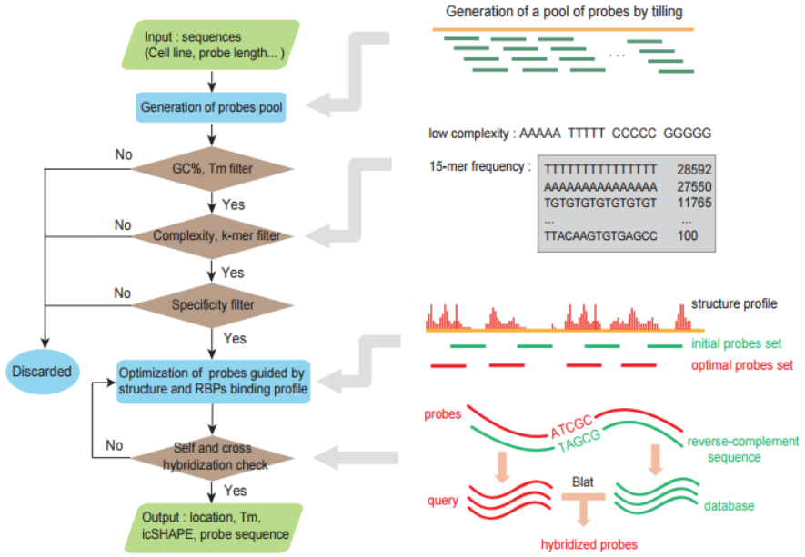

What is DR-Probe?
DR-Probe is a novel, user-friendly oligonucleotide probe online design tool especially for RNA hybridization capture experiments. This tool systemically took basic probe design criteria(including Tm, G/C content, low-complexity and specificity etc.) into concern and additionally incorporated RNA secondary structure as an important parameter into its algorithm. Importantly, RNA structure profile data is generated from some high-throughput sequencing based experimental analysis like icSHAPE which is more reliable than those pure physical structure prediction or simple computation used in many tools nowadays.
This is the basic work flow of DR-Probe:
